Methods Of Transportation
Walking
Washington D.C. is a great city for walking. It has many pathways and sidewalks that you can travel on. There are also many beautiful trails to walk on, such as the Western Ridge Trail and the Anacostia Riverwalk Trail.
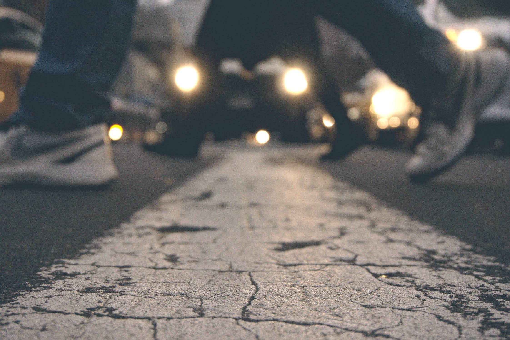
Metro
The Metro has 91 stations and 6 different lines that go across D.C. During the week, the Metro opens at 5 am and at 7 am on the weekends. It runs until 3 am on Fridays and Saturdays, and till midnight on the rest. Food and water are not allowed.
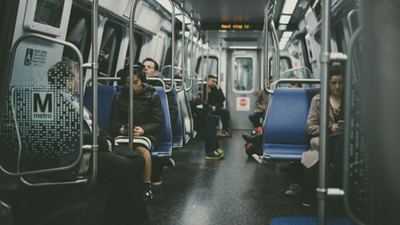 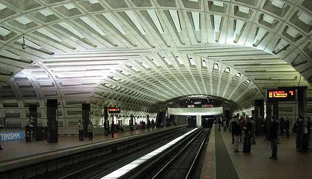Renting a Bike
Renting a bike in Washington D.C. is very easy by using Capital Bikeshare. The company allows you to rent a bike for a low cost. Their options for renting are very flexible, charging $2.00 for 30 minutes and $8 for a day of riding. You can check the availability of the bikes on their website under the maps tab.
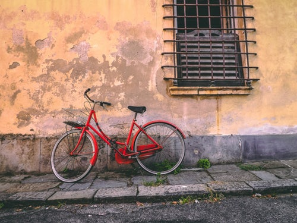 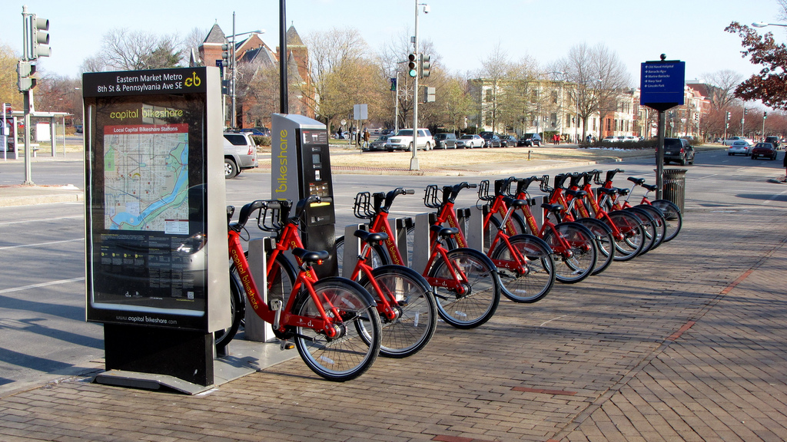Uber or Lyft
Using one of these companies, Uber or Lyft, you can get yourself a ride to wherever you want in D.C. It is very easy to order a Uber or Lyft using a smartphone. They are more expensive compared to other transportation options, but the convenience of using their services make it worth it.
 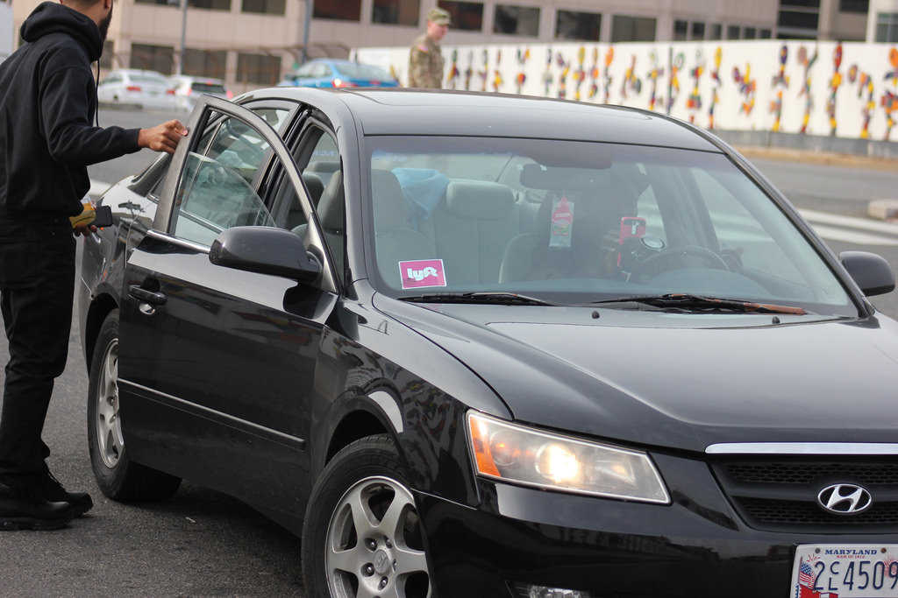
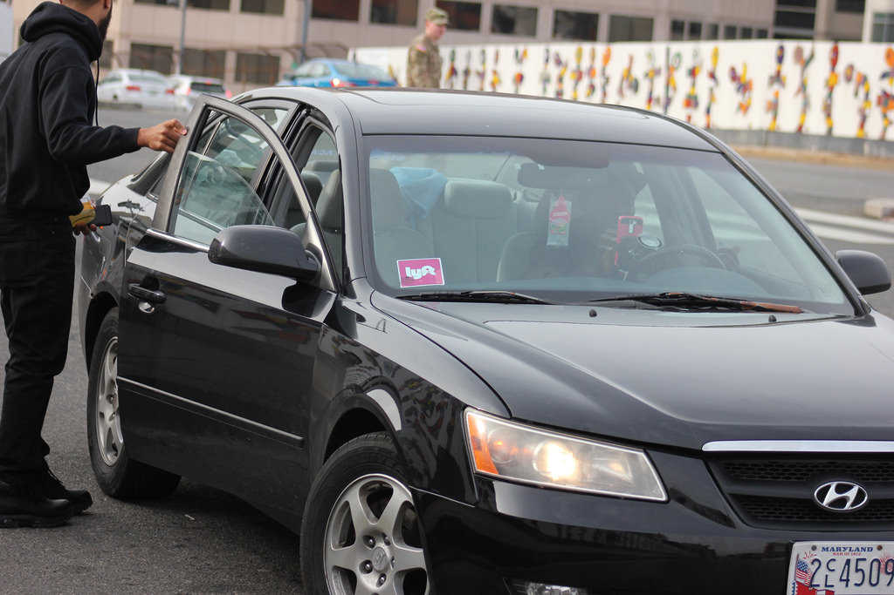
Buses
The main method of bus transportation in Washington, DC is The DC Circulator. The DC Circulator is a cheap bus that you can ride around the National Mall, between the National Mall and the Convention Center, and between Georgetown and Union Station. The cost is 1$.
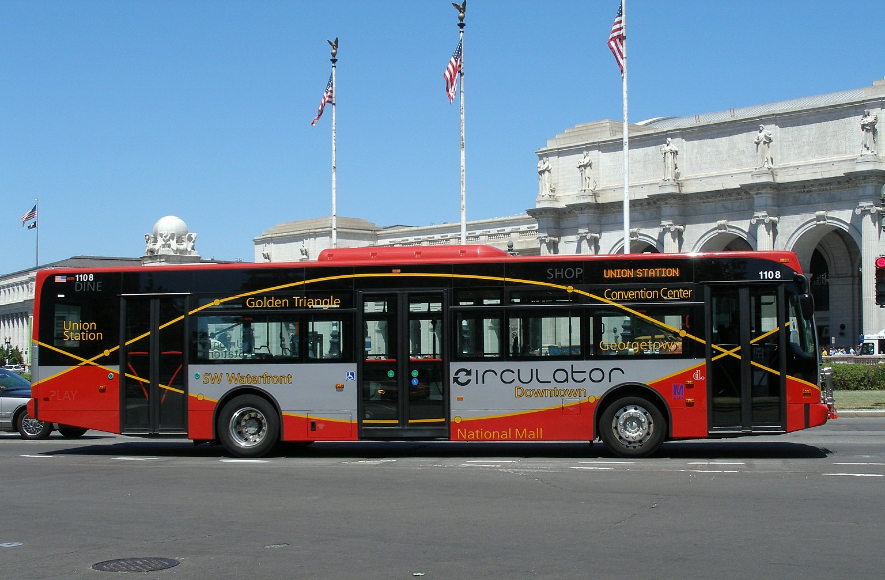 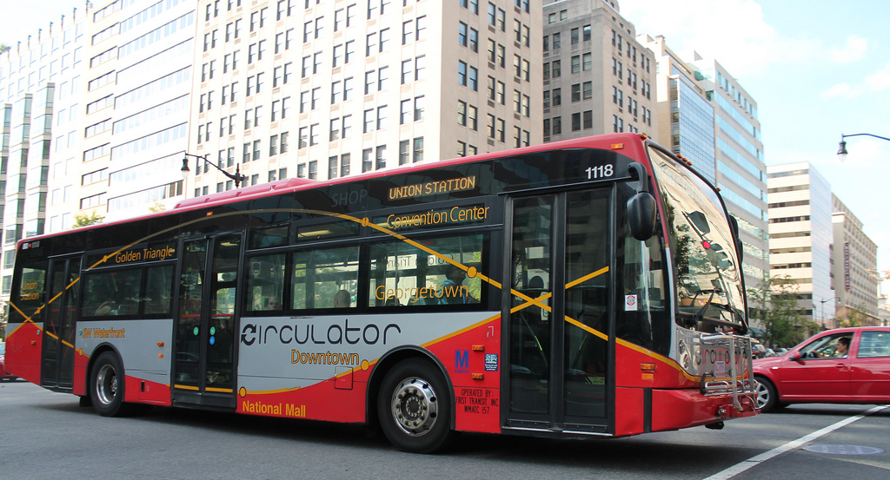Taxi
Taxis are fairly commonplace in DC, and it is quite easy to call one over. However, while they are abundant, they aren't always the cheapest, with costs ranging from 10$-20$. DC Yellow Cab, A taxi company, allows you to book cabs ahead of time, allowing for even more convenience
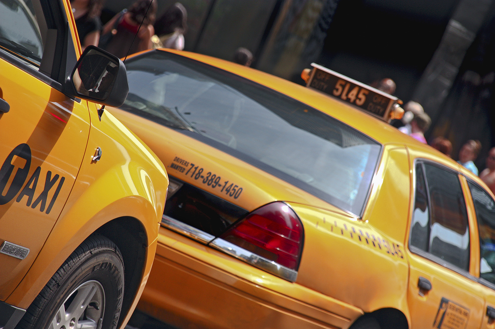 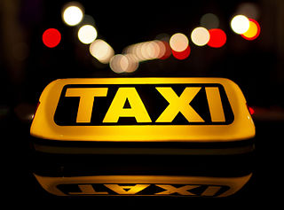